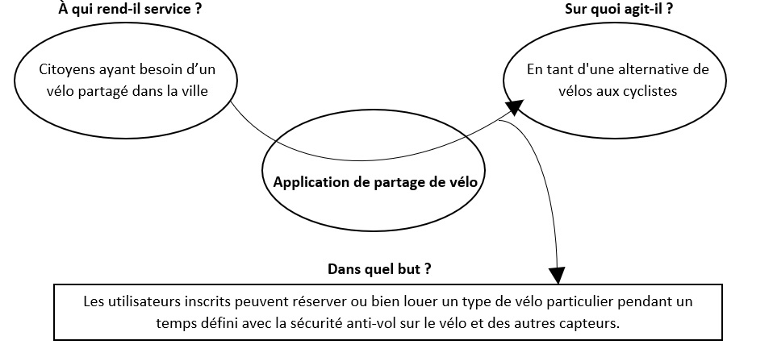

1. Contexte et définition du projet
Aujourd’hui, l’importance de l’utilisation de moyens de transport non polluants est vitale pour l’environnement en réduisant la pollution et l’utilisation excessive des voitures dans une ville. Chaque jour, différents moyens sont intégrés au marché comme le vélo, le scooter, le skateboard, entre autres, comme une alternative d’utilisation : moins coûteuse, plus sain pour la santé et écologique pour l’environnement. Malheureusement, ce n’est pas un marché aussi vaste, car seulement dans les grandes villes nous pouvons trouver le service de vélos et scooters partagés et la plupart de temps seulement sont disponibles dans quelques endroits de la ville ou des stations pour une période limitée. Cela fait qu’il ne s’agit pas d’un moyen demandé et souhaité par les gens.
2. L’objectif du projet
L’objectif de ce projet concerne au besoin du client, il cherche un système de partage de vélo, dans laquelle les utilisateurs inscrits peuvent réserver ou bien louer un type de vélo particulier pendant un temps défini, malgré, à ce moment il n’y a pas dans la ville de Saint-Dié et de même dans les environs un système pour remplir au besoin. Pour telle raison, une application mobile et web seront développés.
Il convient souligner que l’application permettra à l’utilisateur visualiser les points d’accès de vélo ainsi que l’application aura un système de sécurité pour le vélo (anti-vol), une alerte en cas de chute, comprenant des indicateurs clignotants de direction et un feu d'alerte de freinage.
3. Étude Concurrentielle
Tout d’abord, il est nécessaire de faire la réalisation d’une étude concurrentielle. Cette étude permettra connaître l'existence de différentes applications sur le marché ainsi pour voir les points forts et les faiblesses de chacune. À ce jour, il existe certaines applications de partage de vélo, on trouvera ci-dessous quelques-unes avec une description détaillée avec leurs fonctionnements respectifs :
| Application | Points forts | Points faiblesses | Forfaites |
|---|---|---|---|
Match my Bike (Suisse)  |
• Sur l’application smartphone, chaque utilisateur indique la gare et la période de disponibilité de son vélo. • La localisation du vélo se fait grâce au signal de l'application qui indique le lieu de stationnement du vélo. • Pour l’accès, l’utilisateur autorisé peut accéder au vélo qu’il a réservé. L'ouverture du cadenas connecté se fait automatiquement grâce à la présence du smartphone, à l'aide de la fonction Bluetooth. • Compatible Bluetooth 4.x (Low Energy) et Bluetooth 5. • L’entreprise vous offre un antivol robuste en forme de U lors de votre inscription. Il s’ouvre avec votre smartphone par connexion Bluetooth. |
• Les villes pionnières qui accueillent Match my Bike sont 7 (Berne, Bienne, Fribourg, Thoune, Lausanne, Genève et Yverdon). Donc, l’application seulement sert dans ces villes. • Il ne comprend que la partie sécurité (anti-vol) grâce à la localisation du vélo. |
Abonnement: 60 euros pour 12 mois. |
| Vélib (Paris, France) |
• Sur l’application on peut accéder aux vélos mécaniques de couleur verte et des vélos électriques de couleur bleue pour se déplacer d’un point A à un point B. • Pour les usagers moins assidus, des pass 1 ou 7 jours sont mis à leur disposition. • Vélib’ compte aujourd’hui avec 1300 stations et plus de 12 000 vélos en circulation. | • L’application a une portée dans la ville de Paris. • Il ne comprend que la partie sécurité (anti-vol) grâce à la localisation du vélo et de la même manière parce que si on va utiliser un vélo il faut avoir la carta avec le code. |
• La souscription la plus onéreuse coûte 8,30 euros par mois, et vous donne accès gratuitement à un Vélib’ mécanique durant 1h. • Pour un engin électrique, les deux premiers trajets sont gratuits pendant 45 minutes, mais le troisième est facturé 1 euro. |
| Bicloo (Nantes, France) |
• Elle est composée de 123 stations et 1230 vélos (on estime). • Chaque biclooPlus est équipé d’un système antivol avec un verrou autobloquant pour les arrêts temporaires en dehors d'une station (Cette innovation a été activée récemment). |
• L’application a une portée dans la ville de Nantes. | Plusieurs formules vous sont proposées : un forfait gratuit ne vous facture qu’au bout de 30 minutes d’utilisation, et d’autres forfaits payants ne coûtent qu’entre 2 et 36 euros selon vos besoins. |
| Vélo’v (Lyon, France) |
• Elle est composée de 348 stations et 4000 vélos (on estime). • Elle offre différents plans soit par jour, soit pour toute l’année |
• L’application a une portée dans la ville de Lyon. • La plupart de formules ont un prix plus élevé en comparaison du Bibloo. |
Plusieurs formules vous sont proposées : la plupart de formules ont un prix plus élevé en comparaison du Bibloo. |
ShareABike (Canberra, Australia) |
• Le système compte 9 stations, 52 vélos adultes, 5 vélos électriques, 17 vélos enfants, 2 sièges bambins, 2 remorques vélo. • L'application propose également un cadenas, des cartes et un casque à l'utilisateur. |
• C’est un service seulement disponible dans l’Australie, plus précise dans la capital Canberra. | Le prix par heure est de 1,5 dollars. |
Nous pourrions continuer en analysant différentes applications de partage de vélo, mais comme nous pouvons le voir, la plupart des applications n’ont qu’une portée à l’intérieur d’une ville ou de certaines parties des stations, de sorte qu’aucune ne peut satisfaire les besoins de notre client. En outre, ils ne possèdent qu’une partie des caractéristiques demandées par le client : anti-vol, si bien est une chose important mail il manque d’autres.
4. Description fonctionnelle des besoins

| EXIGENCES FONCTIONNELLES |
|---|
| N | Exigence | Description | Priorité |
|---|---|---|---|
| 1 | Création de comptes. | Le système permettra aux utilisateurs créer des comptes avec leurs informations personnelles pour l'utilisation de l'application mobile. | Élevée. |
| 2 | Validation de la compte pour l'accès au système. | Les utilisateurs pourront accéder au système à travers d'un nom d'utilisateur et un mot de passe fait précédemment. | Élevée. |
| 3 | Création d'un espace partagé pour un vélo sur l'application. | Les utilisateurs qui sont propriétaires d'un vélo, ils pourront l'ajouter dans leur espace partagé, il faut enregistrer le type de vélo, la date de disponibilité et la localisation du vélo. | Élevée. |
| 4 | Gestion de espace partagé de vélo. | Les propriétaires peuvent gérer leurs vélos de partage, en modifiant le type de vélo, la date de disponibilité et la localisation de vélo ainsi que l'élimination d'un vélo sur l'application. | Élevée. |
| 5 | Consultation de vélos partagés. | Les propriétaires peuvent consulter leurs vélos partagés, en regardant sur l'application une liste avec le type du vélo, la date de l'utilisation et la localisation. | Élevée. |
| 6 | Demande de vélo. | Les utilisateurs qui cherchent un vélo pourront le demander ou bien annuler la demande, en indiquant le type de vélo, la date de début et de fin de l'utilisation et le point de la localitation du vélo souhaité entre les vélos disponibles. | Élevée. |
| 7 | Consultation de vélos demandés. | Les utilisateurs peuvent consulter les dernières vélos demandés , en regardant sur l'application une liste avec le type du vélo, la durée de l'utilisation et la localisation. | Élevée. |
| 8 | Gestion du profil de l'utilisateur. | Les utilisateurs pourront modifier leurs informations personelles sur l'application. | Élevée. |
| 9 | Affichage des alertes en cas de chute. | Les utilisateurs seront alertés en cas de chute du vélo à travers de l'application. | Élevée. |
| EXIGENCES NON FONCTIONNELLES |
|---|
| N | Exigence | Description | Niveau d'exigences |
|---|---|---|---|
| 1 | Interface simple et détaillée. | L'interface du système sera compréhensible et simple par l'utilisateur avec un aspect visuel satisfaisant. C'est-à-dire, un menu bien organisé, intuitif et d'icônes liées à sa fonction pour un comprehension rapide. | Ne pas utiliser de couleurs dangeureuses et agressives. Il faut suivre que 4 couleurs. |
| 2 | Portabilité sur les aplications dévelopées. | Le système doit fonctionner sur différentes plates-formes, soit pour l'ordinateur ou portable (en tant d'Android, IOS). | Le système doit fonctionner sur tous les navigateurs Web modernes et s’adapter à différentes résolutions d’écran. |
| 3 | Sécurité de code. | Le client aura le code développé et le responsable de projet ne pourra pas le divulguer. | Le code source appartiendra au client et le programmateur n’aura pas le droit d’en faire usage. |
5. Devis
Pour le développement du projet, il n’y a qu’un seul développeur, qui supervisera et réalisera chacune des étapes de l’achèvement du système. Un total de 14 semaines seront consacrées à cet événement,'est-à-dire, un total de 420 heures (5 jours par semaine avec une journée de 6 heures). Il est prévu un contrat d’un an, qui permettrait au client de la partie de maintenance pendant cette période.
| Étape | Nombre d'heures | Prix | Total |
|---|---|---|---|
| Conception | 72 | 35.00 € | 2520 € |
| Développement | 240 | 35.00 € | 8400 € |
| Test | 30 | 35.00 € | 1050 € |
| Maintenance | 42 | 35.00 € | 1470 € |
| 13,440 € |
*Il convient de noter que la partie de la base de données est en attente, car différentes options doivent d’abord être analysées.
6. Planning prévisionnel
Comme j'ai mentionné dans le point précédent, on travaillera 5 jours par semaine avec une journée de 6 heures. Nous avons un total de 70 jours de travail (5 jours par 14 semaines = 70 jours). L'image suivante montre le planning prévisionnel avec les étapes et leurs durées :
Bibliographie
- Bicloo. (n.d). Offers. Bicloo. https://www.bicloo.nantesmetropole.fr/fr/offers/groups/list#75720
- Frandoid. (2021, 28 août). Location de vélos en libre-service : les applications à connaître. Frandoid. https://www.frandroid.com/produits-android/mobilite-urbaine/velo-electrique/789201_location-de-velos-en-libre-service-les-applications-a-connaitre
- MathMyBike. (n.d). Fonctionnement. Math My Bike. https://www.matchmybike.ch/
- Vélo'v. (n.d). Home. Vélo'v. https://velov.grandlyon.com/fr/home